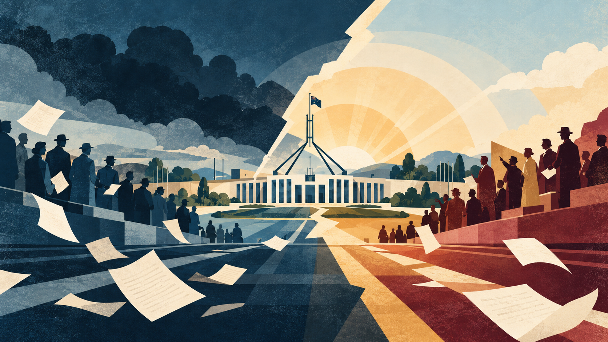

Course goal
This course explains how Australia changed from the postwar society of imperial attachment, racial restriction, regulated wages, expanding suburbs, and durable party loyalties into a country shaped by mass migration, Indigenous claims to land and authority, social liberalization, market reform, and changing political constituencies. It asks how those transformations altered the distribution of security, belonging, and political power, and why their consequences remain contested.
The aim is to develop a connected historical interpretation of the period rather than an account confined to successive governments. Students will assess when a celebrated event changed institutions, when it expressed changes already underway, and when its later symbolic meaning exceeded its immediate effects. By the end of the course, students should be able to explain current political disputes through their historical foundations while identifying the evidence and limits of competing explanations.
Course method
A chronological spine runs from reconstruction and Menzies through the upheavals of the 1960s and 1970s, the Hawke–Keating reforms, and subsequent conflicts over identity and representation. Each week combines assigned selections from three course books with specialist scholarly readings. Macintyre establishes the wider chronology; Bongiorno connects political leadership with parties and social movements; Australian Politics and Policy explains institutions, concepts, and policy mechanisms. The specialist readings then test these frameworks against evidence and competing interpretations.
Seminars compare each author’s question, argument, evidence, and scale of analysis. Electoral surveys, constitutional precedent, archival research, medical writing, photography, and discourse analysis are treated as different ways of establishing a historical claim. Close reading of contemporary documents in Weeks 9 and 14 brings the distinction between historical interpretation and participant testimony into focus. The final seminar returns to the opening readings to assess continuity and change across the full period.
Learning outcomes
Students will develop an evidence-based chronology, compare competing explanations of change, connect social experience with institutional power, and distinguish legal outcomes from political memory. A sustained argument should explain how class, race, gender, property, and national identity intersect, specify what its sources establish, and identify what further evidence would change its conclusions.
Three perspectives throughout the course
All three books are assigned every week. Each selection has a specific historical or analytical purpose, and each is annotated where it is used.
Stuart Macintyre: the historical survey
A Concise History of Australia, 5th ed. Cambridge University Press, 2020.
Read the assigned thematic passages within the named chapters. The relevant chapter spans are chapter 7, “Sacrifice, 1914–1945” (pp. 165–207); chapter 8, “Golden age, 1946–1975” (pp. 208–251); chapter 9, “Rectification, 1976–1996” (pp. 252–286); and chapter 10, “Outcomes, 1997–2019” (pp. 287–328). These spans identify the chapters, rather than requiring all their pages to be read again every week.
Publisher and access information · Publisher’s table of contents
Frank Bongiorno: the political narrative
Dreamers and Schemers: A Political History of Australia. La Trobe University Press / Black Inc., 2022.
The postwar assignments draw principally on chapter 5, “War and Peace: 1939–49”; chapter 6, “The Good Times: 1949–66”; chapter 7, “Revolt, Reason and Reaction: 1966–82”; chapter 8, “Australia Remade? 1983–99”; chapter 9, “The Glimmer of Twilight: 2000–19”; and the conclusion, “In the Age of COVID-19.” Read the thematic selections indicated each week, using the surrounding chronology when needed to understand a decision or conflict.
Australian Politics and Policy: institutions and concepts
Diana Perche, Nicholas Barry, Nicholas Bromfield, Alan Fenna, Emily Foley, Zareh Ghazarian, and Phoebe Hayman, eds. Australian Politics and Policy. Sydney University Press, 2026.
This open-access textbook is organized by institution, political relationship, and policy field. Weekly references give the chapter number, author, and assigned sections; their links open the chapter itself. Later examples in the textbook are comparative material for the historical problem, rather than evidence of what postwar participants knew or intended.
Read or download the complete textbook · Publisher’s edition record
Reading and seminar practice
Begin with the three textbook selections, then read the required specialist works. Where a chapter reappears, return to the specified theme and your notes instead of restarting the whole chapter. Named section titles in Australian Politics and Policy identify the text directly; thematic directions for Macintyre and Bongiorno identify the passages to select within their broader chronological chapters.
For each reading, record its claim or framework, its evidence, and a question about its explanatory limits. Optional seminar extensions deepen a case or method. Macintyre and Bongiorno require book or library access; Australian Politics and Policy and Stokes’s 2014 chapter are free. Recent scholarly articles and primary sources provide the evidence for developments after the narrative histories’ endpoints.
The fourteen-week sequence
Survey concepts open the course; watersheds and social trends test them. The final week returns to the relationship between society, institutions, and political allegiance.
Questions carried across the course
Who received protection and who was excluded? How did everyday practices become political claims? When did institutional reform follow social change, and when did it redirect it? How did the nation’s historical self-understanding shape decisions about citizenship, territory, welfare, and representation?
Using the annotations
Each annotation identifies the reading’s argument or approach, explains its place in the course, and offers a problem for close reading. Interpretive terms such as settlement, assimilation, neoliberalism, reconciliation, and realignment should be tested against the evidence and definitions used by each author.
Connecting the opening and closing weeks
Retain the Week 1 map of social cleavages and institutional protection. In Week 10, compare the reform of those institutions with evidence about redistribution. In Week 14, examine whether the social divisions measured in postwar voting still organize party allegiance, and what has taken their place.
Theme
The institutions, social divisions, and historical interpretations that organize the course. The opening survey treats postwar Australia as an arrangement of economic protection, wage regulation, racial exclusion, federal government, and imperial attachment whose components changed at different speeds.
Underlying question
What made the Australian postwar order distinctive, and how useful is the idea of an “Australian settlement” for explaining its transformation?
Required textbook selections
A Concise History of Australia (5th ed., 2020)
Assigned selection: Chapter 8, “Golden age, 1946–1975” (pp. 208–251): opening discussion of reconstruction, prosperity, and the postwar political order.
Establish the relationship between economic reconstruction and the institutions that organized postwar life. Identify the social groups whose security the national narrative emphasizes, then ask how an account of prosperity changes when migration, Indigenous exclusion, and gender are placed within it. Use these selections to build a chronology against which the specialist readings’ analytical models can be tested.
Dreamers and Schemers (2022)
Assigned selection: Chapter 5, “War and Peace: 1939–49”: the concluding postwar passages; chapter 6, “The Good Times: 1949–66”: the opening account of Coalition government.
Follow the transition from wartime Labor to the political order associated with Menzies. Consider which conflicts persisted despite the change of government and which institutions made party rivalry durable. Compare this political narrative with Macintyre’s wider survey, looking for differences between an explanation centered on electoral competition and one centered on reconstruction and social experience.
Australian Politics and Policy (2026)
Assigned selection: Chapter 3, “Australian political thought”: read the introduction and the sections on liberalism, socialism and social democracy, laborism, and nationalism and exclusion.
Barry introduces the ideological traditions that shaped the state’s responsibilities, citizenship, and political conflict. His account supplies vocabulary for distinguishing social liberalism from later market liberalism and for understanding Labor’s relationship with organized workers. Ask how apparently pragmatic policies contained substantive political ideas, then connect these traditions with the institutions described in the two historical books.
Seminar focus
Build a provisional map of the settlement, identifying who received security, who was excluded, and which institutions connected social position to political allegiance. Keep this map for comparison in Weeks 10 and 14.
Required scholarly readings
F. L. Jones and Ian McAllister (1989)
“The Changing Structural Base of Australian Politics since 1946.” Politics, 24(1): 7–17.
doi: 10.1080/00323268908402073
Using multivariate analysis of voting, Jones and McAllister distinguish changes in class, religion, gender, and generations. They find that class voting remained strong until after the mid-1960s and declined less dramatically than some accounts suggest, while the religious divide and Labor’s disadvantage among women weakened. This establishes a social baseline for the course. Ask how changes in the composition of the electorate differ from changes in the behavior of a particular social group.
Geoffrey Stokes (2014)
“The Rise and Fall of Economic Rationalism.” Studies in Australian Political Rhetoric, edited by John Uhr and Ryan Walter, chapter 10, pp. 195–220. Canberra: ANU Press.
Stokes traces how economic rationalism changed from a favorable description of some Whitlam-era policies into a disputed label for market-oriented reform. He explicitly discusses Kelly’s Australian settlement framework and examines conflicts over government, social values, and economic authority. Use this open-access chapter to connect the course’s postwar institutions with later arguments about their transformation. Distinguish the policies being described from the political work performed by the label, and return to the chapter in Week 10.
Francis G. Castles and John Uhr (2007)
“The Australian Welfare State: Has Federalism Made a Difference?.” Australian Journal of Politics & History, 53(1): 96–117.
doi: 10.1111/j.1467-8497.2007.00445.x
Castles and Uhr trace welfare development to test claims that federal institutions obstruct expansion or slow changes in either direction. Their historical approach makes the relationship between constitutional structure and social protection open to investigation rather than treating federalism as an automatic explanation. Compare their institutional account with the social cleavages in Jones and McAllister. Consider whether a settlement can remain politically recognizable while its means of providing security change.
Theme
Prosperity, civic obligation, anti-communism, religious division, and the 1955 Labor split. The week investigates the ideas and political arrangements behind prolonged Coalition government, while distinguishing Menzies’s Liberalism from later market-oriented conservatism.
Underlying question
How did prosperity, political ideas, and divisions within Labor sustain Coalition rule, and where were the limits of the postwar consensus?
Required textbook selections
A Concise History of Australia (5th ed., 2020)
Assigned selection: Chapter 8, “Golden age, 1946–1975”: selections on Menzies, prosperity, anti-communism, and Labor’s divisions.
Read the politics of Coalition durability within the wider postwar economy and society. Assess the relationship between stable government and continuing conflict, particularly where religious identity and Cold War alignments cut across class. Use the survey to place the 1955 split within a chronology, then evaluate whether the specialist readings explain features that a broad narrative compresses.
Dreamers and Schemers (2022)
Assigned selection: Chapter 6, “The Good Times: 1949–66”: selections on Menzies’s political authority, the Labor split, and party competition.
Examine how political leadership operated through parties, constituencies, and competing accounts of national purpose. Compare explanations of Menzies’s longevity with the institutional and intellectual evidence in Carr and Jones and Lyons. Ask what the label “good times” helps explain about political expectations and what it may leave unresolved about exclusion or opposition.
Australian Politics and Policy (2026)
Assigned selection: Chapter 7, “The Australian party system”: read the sections on Labor Party splits, the Liberal Party, and the early minor parties produced by major-party splits.
Ghazarian explains how party organization, parliamentary competition, and electoral arrangements interact. The discussion of splits and minor parties provides an institutional frame for the DLP’s influence. Distinguish a party’s size from its ability to affect government formation and electoral outcomes, and consider why the same social conflict can have different consequences under different voting systems.
Seminar focus
Explain Coalition durability through both ideas and electoral organization. Test whether “conservative consensus” adequately describes a period containing a failed attempt to ban the Communist Party and a lasting split within Labor.
Required scholarly readings
Andrew Carr and Benjamin T. Jones (2013)
“Civic Republicanism and Sir Robert Menzies: The Non-Liberal Side of the Liberal Leader.” Journal of Australian Studies, 37(4): 485–502.
doi: 10.1080/14443058.2013.832701
Carr and Jones interpret Menzies’s concern for civic virtue, education, and public duty through the tradition of civic republicanism. Their argument complicates an equation of Liberal identity with minimal government or individual economic freedom. Evaluate the speeches and intellectual influences supporting their interpretation. Ask how a constitutional monarchist could endorse republican ideas about citizenship, and what this suggests about continuity between Menzies’s party and the Liberal Party of later decades.
Michael Lyons (2008)
“Defence, the Family and the Battler: The Democratic Labor Party and its Legacy.” Australian Journal of Political Science, 43(3): 425–442.
doi: 10.1080/10361140802267233
Lyons examines the Democratic Labor Party through its policy priorities and political legacy. The reading places anti-communist Labor within a broader social outlook involving defense, family, and economic protection. Use it to examine the consequences of the 1955 split and the role of preferences in sustaining Coalition government. Consider how a party outside the governing majority can influence the electoral system and preserve ideas that later reappear in mainstream politics.
Seminar extension (optional)
Lachlan Clohesy (2013)
“A House Committee on Un-Australian Activities? An Alternative to the Dissolution Act.” Australian Historical Studies, 44(1): 23–36.
doi: 10.1080/1031461X.2012.760636
Clohesy studies a proposed Australian counterpart to American anti-communist investigations that the Liberals drafted but did not introduce. Internal disagreements and Menzies’s competing commitments help explain why Australia did not reproduce the American apparatus. This provides a comparative test of the Cold War’s local effects. Distinguish a shared anti-communist objective from the particular institutions and methods chosen to pursue it.
Theme
Mass migration, racial selection, assimilation, and the gradual emergence of multicultural policy. Migration remade Australian society during Coalition dominance, exposing tensions between economic demand for population growth and the ideal of a white, British nation.
Underlying question
How could the postwar migration program transform Australia while retaining racial exclusion, and what explains the eventual dismantling of White Australia?
Required textbook selections
A Concise History of Australia (5th ed., 2020)
Assigned selection: Chapter 8, “Golden age, 1946–1975”: selections on postwar immigration, assimilation, and changes in racial restriction.
Place migration within the same historical period as Coalition dominance and the long boom. Ask how demographic change altered the meaning of an apparently stable political order. Use the chronology to distinguish the expansion of European migration from the dismantling of racial selection, and compare the timing of policy change with transformations in everyday social life.
Dreamers and Schemers (2022)
Assigned selection: Chapter 5, “War and Peace: 1939–49”, and chapter 6, “The Good Times: 1949–66”: migration-related passages; chapter 7, “Revolt, Reason and Reaction: 1966–82”: passages on the subsequent transition.
Trace migration across several governments rather than assigning the entire transformation to a single minister or party. Compare the political significance of population growth with competing definitions of national belonging. Keep the sequence from Calwell through the Coalition and Whitlam visible when evaluating Tavan’s account of incremental policy change.
Australian Politics and Policy (2026)
Assigned selection: Chapter 40, “Immigration and multicultural policy”: read “Historical context,” “Multiculturalism,” and the discussions of political parties and public opinion under “Policy actors.”
This chapter distinguishes immigration selection from multicultural policy and identifies the actors influencing both. Read its historical sections to follow the shift from racial restriction and assimilation toward a more diverse society. Compare its account of policy-making with Tavan’s evidence about leadership and public acceptance, and ask which aspects of migration require an institutional explanation and which require social history.
Seminar focus
Trace the movement from assimilation to integration and multiculturalism, distinguishing changes in admission rules from changes in everyday expectations of migrants. Identify the roles of ministers, administrators, public opinion, and international pressure.
Required scholarly readings
Gwenda Tavan (2012)
“Leadership: Arthur Calwell and the Post-War Immigration Program.” Australian Journal of Politics & History, 58(2): 203–220.
doi: 10.1111/j.1467-8497.2012.01632.x
Tavan evaluates Calwell’s leadership of an immigration program that expanded non-British European migration while defending White Australia. She treats innovation, administration, and racial restriction as connected features of his political project. The reading prevents a simple classification of Calwell as either a modernizing hero or an obstacle to change. Examine how the same population policy could broaden the nation’s cultural composition and enforce boundaries on who could belong.
Gwenda Tavan (2004)
“The Dismantling of the White Australia Policy: Elite Conspiracy or Will of the Australian People?.” Australian Journal of Political Science, 39(1): 109–125.
doi: 10.1080/1036114042000205678
Tavan challenges the claim that elites abolished White Australia without public knowledge or acceptance. Her account emphasizes incremental policy change and shifting public attitudes. Read for the evidence supporting the relationship between leadership and public opinion, rather than assuming that either acted alone. Compare the chronology of administrative adjustments with the later political memory of a single decisive abolition, and consider what changed before the Whitlam government took office.
Seminar extension (optional)
Eureka Henrich (2019)
“Constructing the “New Australian Patient”: Assimilation as Preventative Medicine in Postwar Australia.” Histoire sociale / Social History, 52(105): 109–135.
Through medical writing from the 1950s and 1960s, Henrich shows how doctors interpreted migrant health through assimilationist expectations. Medical assistance could bridge cultural differences while reproducing stereotypes and assigning responsibility for illness to migrants themselves. This moves the analysis from immigration law into professional practice. Ask how institutions that offered care also defined desirable behavior, and how their sources enable or limit access to migrants’ own experiences.
Theme
The long boom as a transformation of everyday life: housing, industrial work, domesticity, consumption, and urban expansion. The suburban home is examined as a material achievement, an unevenly distributed benefit, and a political image of the nation.
Underlying question
Who could participate in the Australian Dream, and how did suburban life shape citizenship, inequality, and later political nostalgia?
Required textbook selections
A Concise History of Australia (5th ed., 2020)
Assigned selection: Chapter 8, “Golden age, 1946–1975”: selections on housing, suburbs, employment, consumption, and family life.
Relate the material changes of the long boom to everyday expectations of security and respectability. Compare a national account of rising prosperity with the uneven distribution of housing, services, and stable employment. Ask which conditions made suburban aspirations attainable and whether the same conditions were available to migrants, women, renters, and industrial workers.
Dreamers and Schemers (2022)
Assigned selection: Chapter 6, “The Good Times: 1949–66”: selections linking affluence and domestic life with political expectations.
Read suburban prosperity as part of the setting in which governments acquired and maintained authority. Compare the social groups visible in a political narrative with those foregrounded by Allon and Morrow. Ask how household aspirations influenced national political language, and whether images of security were descriptions of widespread experience or claims about how Australians ought to live.
Australian Politics and Policy (2026)
Assigned selection: Chapter 44, “Urban policy”: read “Urban policy is politics,” “Theories of urban policy,” and “National urban policy.”
Rogers and Pill connect urban policy with power, inequality, and the division of responsibilities among governments. Their framework helps explain why suburbs cannot be understood simply as individual housing choices. Apply it to the historical cases, distinguishing infrastructure provision, property interests, and household aspirations, while keeping present-day policy concepts separate from the intentions of postwar actors.
Seminar focus
Compare a national image of suburban security with an account of local infrastructure and industrial change. Explain how gender, migration, employment, and access to services complicate the picture of a uniform affluent society.
Required scholarly readings
Fiona Allon (2014)
“At Home in the Suburbs: Domesticity and Nation in Postwar Australia.” History Australia, 11(1): 13–36.
doi: 10.1080/14490854.2013.11668498
Allon uses the idea of domopolitics, or home politics, to connect the suburban household with national belonging. A historically specific period of secure work and domestic prosperity became a supposedly timeless model of Australian life. Read for the political consequences of this conversion of selective memories into a national ideal. Ask who is excluded when homeownership and a particular household form become measures of responsible citizenship, including in later appeals to the mortgage belt.
Andrew May (2009)
“Ideas from Australian Cities: Relocating Urban and Suburban History.” Australian Economic History Review, 49(1): 70–86.
doi: 10.1111/j.1467-8446.2009.00250.x
May argues for a richer history of Australian cities and suburbs, attentive to ordinary aspirations, geographical differences, and social experience. His methodological intervention challenges dismissive portrayals of suburbia as culturally empty or homogeneous. Use it to evaluate the scale at which urban history should be written. Consider what local life stories and comparisons between cities reveal that a national narrative of prosperity or conformity cannot adequately explain.
Seminar extension (optional)
Dan Morrow (2012)
““Forging, Ahead”: Industry and Environmental Transformation in a Melbourne Suburb 1906–85.” Australian Economic History Review, 52(2): 148–166.
doi: 10.1111/j.1467-8446.2012.00347.x
Morrow follows Sunshine’s development from an industrial suburb to an area associated with service deprivation, industrial contraction, and environmental change. The case shows how uneven urban provision undercut the presumed comfort of the long boom. Its longer chronology connects postwar expansion to earlier industrial organization. Pair it with Allon to distinguish the public image of suburban security from the infrastructure and employment conditions required to sustain it.
Theme
The changing international orientation of a country attached to Britain, allied with the United States, and increasingly connected to Asia. Diplomacy, visual culture, trade, and conscription reveal how foreign policy entered domestic identities and everyday lives.
Underlying question
How did Australia reconcile British attachment, an American security alliance, and its Asian location, and why did Vietnam make those tensions politically explosive?
Required textbook selections
A Concise History of Australia (5th ed., 2020)
Assigned selection: Chapter 8, “Golden age, 1946–1975”: selections on Britain, the American alliance, Asian relations, and Vietnam.
Establish the sequence of international reorientation alongside domestic reconstruction and prosperity. Identify when diplomatic or strategic commitments changed and when older attachments persisted. Compare the national chronology with the cultural and recruitment evidence in Gerster and Ville and Siminski, asking how international relationships affected groups whose experiences are less visible in diplomatic history.
Dreamers and Schemers (2022)
Assigned selection: Chapter 6, “The Good Times: 1949–66”, and chapter 7, “Revolt, Reason and Reaction: 1966–82”: foreign-policy and Vietnam-related passages.
Follow foreign policy across the end of the Menzies period and the rise of domestic contestation. Examine how national loyalty, party rivalry, and generational conflict interacted with strategic choices. Compare accounts of leaders’ decisions with the social distribution of military service, and ask when an international commitment became a dispute over the government’s authority at home.
Australian Politics and Policy (2026)
Assigned selection: Chapter 38, “Foreign and defence policy”: read “Historical background,” the discussion of Labor and Coalition foreign-policy traditions, Section 3 on regionalism, and “USA alliance.”
This chapter provides an institutional and thematic frame for continuity and change in Australia’s international position. Compare alliance policy with regional relationships and identify how party traditions shape their interpretation. Use the framework to ask whether Britain, the United States, and Asia represented mutually exclusive orientations, then distinguish that analytical question from the specific historical evidence about Japan and Vietnam.
Seminar focus
Compare diplomatic language, photographs, and recruitment arrangements as evidence of international reorientation. Explain how the effects of Vietnam differed across generations and social groups, and distinguish strategic choices from claims about national loyalty.
Required scholarly readings
Frank Bongiorno (2005)
“The Price of Nostalgia: Menzies, the “Liberal” Tradition and Australian Foreign Policy.” Australian Journal of Politics & History, 51(3): 400–417.
doi: 10.1111/j.1467-8497.2005.0382a.x
Bongiorno surveys interpretations of Menzies’s foreign policy through imperial attachment, nationalism, Asia, and the American alliance. He treats the relationship between these commitments as historically contingent and increasingly difficult to sustain. Read this alongside Week 2’s account of Menzies’s political thought. Assess whether Britishness obstructed adaptation or initially helped organize it, and identify how the international setting changed the meaning of a Liberal foreign-policy tradition.
Robin Christopher Gerster (2018)
“Take Two: Photography and the Reconstruction of the Post-War Australia/Japan Relationship.” History Australia, 15(1): 23–45.
doi: 10.1080/14490854.2017.1413946
Gerster examines photography as a medium through which Australians reinterpreted Japan between military occupation and renewed commercial relations. Images helped turn a recent enemy into a society with which Australia could imagine a shared future. The reading broadens foreign-policy history beyond treaties and ministers. Evaluate who produced and circulated the photographs, what they encouraged viewers to see, and how cultural reinterpretation related to the 1957 commerce agreement.
Simon Ville and Peter Siminski (2011)
“A Fair and Equitable Method of Recruitment? Conscription by Ballot into the Australian Army during the Vietnam War.” Australian Economic History Review, 51(3): 277–296.
doi: 10.1111/j.1467-8446.2011.00335.x
Ville and Siminski investigate the birthday-ballot recruitment system and the claim that random selection made conscription equitable. Their analysis turns a familiar symbol of the Vietnam era into a question about procedure and the distribution of obligations. Distinguish randomness within the eligible pool from fairness in the broader population. Use the article to connect security policy with disputes about age, opportunity, compulsory service, and the legitimacy of state demands.
Theme
Assimilation, constitutional reform, Indigenous activism, and demands for land and self-determination. The referendum is placed within a longer political struggle, including Wave Hill and the Aboriginal Tent Embassy, rather than treated as the moment Indigenous Australians first acquired rights.
Underlying question
What did the 1967 referendum change, and why did its symbolic promise coexist with a turn toward Indigenous nationalism and land rights?
Required textbook selections
A Concise History of Australia (5th ed., 2020)
Assigned selection: Chapter 8, “Golden age, 1946–1975”: passages concerning assimilation, Indigenous activism, and the 1967 referendum.
Place constitutional reform within the broader postwar history of exclusion and political mobilization. Distinguish the national chronology from the expectations held by Indigenous campaigners. Ask how a survey’s treatment of 1967 changes when the referendum is interpreted through subsequent disappointment, land-rights demands, and claims to self-determination rather than solely through its public celebration.
Dreamers and Schemers (2022)
Assigned selection: Chapter 7, “Revolt, Reason and Reaction: 1966–82”: selections on Indigenous activism, land rights, and political representation.
Read Indigenous mobilization as a source of political change within the wider conflicts of the period. Compare the place of activists in the political narrative with McGregor’s account of cultural nationalism. Ask what is gained by connecting Indigenous struggles with the decade’s other movements, and what must remain distinct because the demands concerned sovereignty and colonial subordination.
Australian Politics and Policy (2026)
Assigned selection: Chapter 23, “Indigenous politics”: read the opening discussion of First Peoples, the account of political activism, and the sections on organizations, leadership, and diversity within the movement.
Perche and O’Neil frame Indigenous politics through sovereignty, self-determination, representation, and the diversity of First Nations claims. Use their framework to distinguish participation within Australian institutions from demands to transform those institutions. Compare the chapter with the accounts of 1967 and Aboriginal nationalism, avoiding an assumption that one organization or one reform represented all Indigenous political aspirations.
Seminar focus
Separate constitutional provisions, administrative practice, and political memory. Compare inclusion within the Australian nation with demands for self-determination, and identify why activists could judge a celebrated national milestone insufficient.
Required scholarly readings
Bain Attwood and Andrew Markus (1998)
“(The) 1967 (Referendum) and All That: Narrative and Myth, Aborigines and Australia.” Australian Historical Studies, 29(111): 267–288.
doi: 10.1080/10314619808596073
Attwood and Markus explain the referendum’s significance through the narratives of citizenship and inclusion advanced by its supporters and later interpreters. They distinguish its constitutional effects from claims that it newly granted citizenship or voting rights. The article is a study of political memory as well as constitutional history. Ask why a limited legal change could carry such expansive expectations, and how later commemorations alter the understanding of the original campaign.
Russell McGregor (2009)
“Another Nation: Aboriginal Activism in the Late 1960s and Early 1970s.” Australian Historical Studies, 40(3): 343–360.
doi: 10.1080/10314610903105217
McGregor explains the rise of Aboriginal nationalism through disappointment after 1967, Black Power, land rights, youth radicalization, and identity politics. He emphasizes cultural renewal as a response to colonial subordination. This shifts attention from what governments offered to what Indigenous activists demanded. Compare the aspirations documented here with the referendum’s promise of inclusion, and consider how transnational influences interacted with specific Australian experiences and political claims.
Seminar extension (optional)
Tim Rowse and Len Smith (2010)
“The Limits of “Elimination” in the Politics of Population.” Australian Historical Studies, 41(1): 90–106.
doi: 10.1080/10314610903317598
Rowse and Smith study census policy between 1961 and 1971 to show that inclusion did not simply erase Indigenous identification. Demands for recognition, technical problems with racial categories, and administrative interests reshaped enumeration. This introduces the politics of population knowledge. Evaluate how counting can both sustain governmental control and make a collective presence visible, and compare that process with the national symbolism analyzed by Attwood and Markus.
Theme
Women’s liberation, gay and lesbian liberation, reproductive politics, welfare participation, and Indigenous self-determination. Whitlam-era reform is examined in relation to movements and demands already developing outside Parliament, with attention to the obstacles between aspiration and implementation.
Underlying question
How did matters treated as private become public political claims, and how did the Whitlam government translate social movements into institutional change?
Required textbook selections
A Concise History of Australia (5th ed., 2020)
Assigned selection: Chapter 8, “Golden age, 1946–1975”: selections on changing social expectations, women’s liberation, and Whitlam-era reform.
Connect cultural change and political reform without assuming that one automatically produced the other. Examine how developments within families, work, and public institutions interacted. Use the historical sequence to distinguish demands that preceded Whitlam from policies his government introduced, then compare the visibility of social movements with the achievements emphasized in a national survey.
Dreamers and Schemers (2022)
Assigned selection: Chapter 7, “Revolt, Reason and Reaction: 1966–82”: passages on the social movements and reforms of the Whitlam period.
Read governmental reform alongside the movements that helped define its purposes. Compare the scale of political ambition with the institutional constraints documented in Oppenheimer and Perche. Ask which changes depended on legislation, which operated through administrative programs, and which involved shifts in the legitimacy of claims previously treated as private or outside formal politics.
Australian Politics and Policy (2026)
Assigned selection: Chapter 21, “Gender and sexuality in Australian politics”: read the opening discussion of the public/private divide, “Political participation,” “Institutions,” and “Feminist institution building.”
Andrew explains how feminist and queer approaches broaden the meaning of politics and how movements reshape institutions. The account of feminist institution-building connects the Whitlam period with later disputes over representation. Compare these concepts with Arrow and Woollacott’s historical framing, identifying how a change in political visibility differs from a transfer of durable decision-making power.
Seminar focus
Compare reforms of representation, welfare, and intimate life. Identify what movements asked for, what Commonwealth institutions could deliver, and why participation or recognition did not necessarily transfer durable political power.
Required scholarly readings
Michelle Arrow and Angela Woollacott (2018)
“Introduction: How the Personal Became Political: The Gender and Sexuality Revolutions in 1970s Australia.” Australian Feminist Studies, 33(95): 1–8.
doi: 10.1080/08164649.2018.1498730
This introduction frames the 1970s through changes in gender and sexuality, connecting street protest, policy reform, transnational movements, and resistance. It asks how private experience became a basis for political demands and how the decade’s transformations should be assessed. Use it to set the week’s analytical questions rather than as a complete history of either movement. Distinguish changes in everyday expectations from changes in law and government institutions.
Melanie Oppenheimer (2008)
“Voluntary Action, Social Welfare and the Australian Assistance Plan in the 1970s.” Australian Historical Studies, 39(2): 167–182.
doi: 10.1080/10314610802033155
Oppenheimer reconstructs the Australian Assistance Plan, introduced in 1973 and abolished under Fraser three years later. The program sought a different relationship between government, community participation, and the voluntary sector. It provides a concrete way to examine Whitlamism beyond its best-known legislation. Assess what the program changed even though it was short-lived, and ask how the capacity to participate differed among communities and organizations.
Diana Perche (2024)
“Aboriginal Self-determination, Land Rights, and Recognition in the Whitlam Era: Laying Groundwork for Power Sharing and Representation.” Australian Journal of Politics & History, 70(2): 169–187.
Perche examines the move from assimilation toward self-determination, tracing ambitions for representation, incorporation, compensation, and land tenure alongside political constraints. She connects these initiatives with later debates about Voice, Treaty, and Truth. Read for the gap between reform language and institutional authority, and for continuities across the Whitlam and Fraser governments. Relate the account to Indigenous demands in Week 6 and retain it for the final week’s discussion of recognition.
Theme
Environmental and urban movements, construction unions, feminist politics, and anti-feminist mobilization. The week places collective action outside Parliament at the center of the 1970s and examines how supporters and opponents of social change organized competing claims to authority.
Underlying question
How did movements turn workplace power and domestic identities into political influence, and what made the transformations of the 1970s both effective and contested?
Required textbook selections
A Concise History of Australia (5th ed., 2020)
Assigned selection: Chapter 8, “Golden age, 1946–1975”, and the opening of chapter 9, “Rectification, 1976–1996”: passages on protest, environmental politics, and the response to social change.
Follow the movement from the late boom into a more contested social and political setting. Compare the national account of change with the local alliances and organized resistance in the specialist readings. Ask how the transition between chapters periodizes the decade, and whether environmental and anti-feminist mobilization challenge a single narrative of liberalization or reversal.
Dreamers and Schemers (2022)
Assigned selection: Chapter 7, “Revolt, Reason and Reaction: 1966–82”: selections on protest movements and resistance to reform.
Examine the relationship between movements outside Parliament and the wider struggle over public authority. Compare unions, residents, feminist organizations, and conservative opponents as differently situated political actors. Use the chapter’s period frame to assess whether the 1970s generated a stable consensus or sustained conflicts that could be organized through competing claims about community, family, and social responsibility.
Australian Politics and Policy (2026)
Assigned selection: Chapter 27, “Social movements”: read “What are social movements?”, “Why do they form?”, and the sections on political opportunities, mobilizing structures, and framing.
Lloyd identifies mechanisms through which collective demands become organized political action. Apply the distinctions among opportunities, organizational resources, and framing to the green bans and anti-feminist campaigns. Ask whether similar mechanisms explain movements with opposing objectives, and specify what evidence would show why some organizations achieved influence while others failed to sustain participation or change policy.
Seminar focus
Compare the constituencies, tactics, and legitimating claims of green-ban organizers and anti-feminist groups. Examine how each movement defined social responsibility and whose participation it treated as authoritative.
Required scholarly readings
Verity Burgmann (2000)
“The Social Responsibility of Labour versus the Environmental Impact of Property Capital: The Australian Green Bans Movement.” Environmental Politics, 9(2): 78–101.
doi: 10.1080/09644010008414525
Burgmann interprets green bans as a confrontation between organized labor’s social responsibilities and property capital’s power to shape cities. Construction workers’ refusal to undertake particular projects connected workplace organization with heritage, environmental protection, and residents’ demands. Evaluate the mechanisms through which withholding labor altered urban decision-making. Ask how this form of power differed from electoral representation, and what alliances were necessary for unions to act beyond immediate wages and conditions.
Michelle Arrow (2021)
““How Much Longer Will We Allow This Country’s Affairs to Be Run by Radical Feminists?” Anti-Feminist Activism in Late 1970s Australia.” Australian Historical Studies, 52(3): 331–347.
doi: 10.1080/1031461X.2020.1821723
Arrow examines Women’s Action Alliance and Women Who Want to Be Women, showing how anti-feminist activists used identities as wives and mothers to authorize political claims. Their campaigns adapted language associated with the women’s movement while contesting its influence over policy. Read this as an account of active organization and competing responses to economic pressure. Consider why small groups could affect federal politics and why opposition to feminism should not be understood as simple political inactivity.

Theme
The Senate’s blocking of supply, reserve powers, the Crown, and the Fraser transition. Archival history and constitutional precedent distinguish participants’ actions, their claims to authority, and the effects of subsequent evidence on the controversy.
Underlying question
Which constitutional conventions and competing claims to democratic authority shaped the Dismissal, and how should new archival evidence change its interpretation?
Required textbook selections
A Concise History of Australia (5th ed., 2020)
Assigned selection: Chapter 8, “Golden age, 1946–1975”: the concluding account of the Whitlam government; chapter 9, “Rectification, 1976–1996”: the opening Fraser-era discussion.
Read across the chapter boundary to examine whether 1975 appears primarily as a constitutional event, a political defeat, or the end of a wider historical period. Establish the sequence of government transition and distinguish it from its later interpretation. Compare the survey’s explanatory scale with Hocking’s archival questions and Twomey’s constitutional comparisons.
Dreamers and Schemers (2022)
Assigned selection: Chapter 7, “Revolt, Reason and Reaction: 1966–82”: passages on the supply crisis, the Dismissal, and the Fraser transition.
Locate the confrontation within the wider political conflicts of the 1970s. Compare the roles attributed to parties, parliamentary institutions, and individual decision-makers. Use the narrative to organize the chronology, then test its explanation against the primary documents, distinguishing a participant’s stated justification from what the subsequent historical record establishes.
Australian Politics and Policy (2026)
Assigned selection: Chapter 4, “Executive government”: read “Responsible government,” “The governor-general,” and “The prime minister.”
Taflaga sets out the relationships among executive authority, parliamentary responsibility, and vice-regal office. These concepts clarify the institutional questions raised in 1975 without resolving the historical controversy in advance. Distinguish formal powers from the expectations governing their use, and compare constitutional descriptions with the competing interpretations supplied by Kerr, Barwick, Whitlam, and Fraser.
Seminar focus
Reconstruct the decisions and their evidentiary basis. Distinguish legal power, constitutional convention, political judgment, and retrospective justification across the historical interpretations and contemporary documents.
Required scholarly readings
Jenny Hocking (2024)
“Critical Archival Encounters and the Evolving Historiography of the Dismissal of the Whitlam Government.” Australian Journal of Politics & History, 70(2): 281–299.
Hocking examines archival access, missing records, and revelations in the history of the Dismissal. The construction and availability of evidence become part of the historical problem. Evaluate how a new record changes an explanation and where inference exceeds what a document establishes. Compare her argument with Twomey’s, distinguishing questions answered by archival discoveries from those answered by constitutional precedent.
Anne Twomey (2014)
“The Exercise of Reserve Powers in Victoria from 1912–1955.” Australian Bar Review, 39(2): 198–214.
Author manuscript and publication record
Twomey examines earlier exercises of vice-regal power in Victoria, asking why some became notorious while others disappeared from public memory. The comparison supplies constitutional context without predetermining whether Kerr acted properly. Assess which precedents are comparable in institutions and circumstances, and how participants’ responses determine both an intervention’s immediate consequences and its later historical reputation.
Additional required textbook selection
Australian Politics and Policy (2026)
Assigned selection: Chapter 5, “Parliaments of Australia”: read the discussions of forming government, financial appropriation, and confidence under “Functions of parliament.”
Laurie and Arklay separate parliamentary functions that the supply crisis brought into conflict. Use the distinction between appropriation and confidence to explain why support in the House and access to funds became different questions. Compare the powers and representative claims of the two chambers, then assess how these arrangements conditioned the options available to political participants.
Required primary sources
Sir John Kerr, dismissal letter to Gough Whitlam, November 11, 1975
Read the letter as an exercise of authority and Kerr’s account of Whitlam’s position. Compare its stated basis with the scholarly reconstruction of events.
Sir Garfield Barwick, advice to Kerr, November 10, 1975
Identify the steps connecting the Senate’s powers over supply to the proposed dismissal. Treat the advice as a participant’s constitutional argument, reproduced by an advocacy organization, rather than a judgment of the High Court.
Gough Whitlam, Parliament House steps speech, November 11, 1975
View the Whitlam Institute’s speech extract. Examine how Whitlam framed resistance and the Crown after dismissal, distinguishing this public appeal from a constitutional submission.
House of Representatives proceedings, November 11, 1975: Fraser’s announcement
Read or listen to the Museum of Australian Democracy’s chamber extract. Compare Fraser’s claim to restore stability with the responses; this is a selection from the day’s proceedings.
Theme
Financial and trade liberalization, wage bargaining, the Accord, and changes in social protection. Competing accounts of the policy process and welfare outcomes test how much of the Australian settlement was dismantled and how much was reconstructed through different institutions.
Underlying question
Did economic reform dismantle the Australian welfare settlement, or change the instruments through which governments pursued economic security and redistribution?
Required textbook selections
A Concise History of Australia (5th ed., 2020)
Assigned selection: Chapter 9, “Rectification, 1976–1996” (pp. 252–286): selections on Hawke, Keating, structural reform, and changing social protection.
Place economic restructuring within a chronology extending beyond individual reform announcements. Distinguish the changes in financial regulation, trade, employment relations, and welfare that together altered the settlement. Compare the survey’s account of reform with Goldfinch’s explanation of decision-making and the contrasting measures of social protection used by Castles and Fenna and Tapper.
Dreamers and Schemers (2022)
Assigned selection: Chapter 8, “Australia Remade? 1983–99”: selections on the Hawke–Keating governments, the Accord, and economic reform.
Examine how Labor organized support for policies that changed its inherited relationship with unions, the state, and markets. Compare the chapter’s question about a remade Australia with the mechanisms identified in the specialist readings. Ask which changes involved adaptation within existing political coalitions and which suggest a more fundamental transformation of the purposes of government.
Australian Politics and Policy (2026)
Assigned selection: Chapter 35, “Economic policy”: read the discussions of the mixed economy and Keynesianism, followed by “The resource economy dilemma” and “The end of the protectionist road.”
Fenna connects macroeconomic management with the structural choices behind resource dependence, protection, and liberalization. His distinctions help separate stabilization policy from reforms of the economic system. Compare those mechanisms with Stokes’s account of economic rationalist rhetoric, asking when a common label conceals different policies and when claims of efficiency depend on contested social priorities.
Seminar focus
Return to Week 1’s institutional map and identify which mechanisms changed. Assess whether greater market exposure, altered wage regulation, and rising social expenditure can coexist, and specify what evidence would resolve disagreement between the readings.
Required scholarly readings
Shaun Goldfinch (1999)
“Remaking Australia’s Economic Policy: Economic Policy Decision-Makers During the Hawke and Keating Labor Governments.” Australian Journal of Public Administration, 58(2): 3–20.
Drawing on interviews with policy elites, Goldfinch examines the institutions and people that influenced particular economic decisions. He challenges explanations that assign reform primarily to the central economic agencies, identifying roles for ministers, advisers, unions, and other departments. Read for the relationship between ideas and institutional access. Evaluate what elite interviews reveal about decision-making and what they leave unresolved about public pressure, distributional effects, and the experience of workers.
Francis G. Castles (2001)
“A Farewell to Australia’s Welfare State.” International Journal of Health Services, 31(3): 537–544.
doi: 10.2190/E6W8-3HYY-EHJ5-7VFK
Castles argues that Australia’s relatively limited cash benefits must be understood alongside wage regulation and the design of means tests. He sees reforms in the 1980s and 1990s, especially under the Coalition, as undermining these distinctive arrangements. Treat the article as a specific argument about the erosion of protection through wages and benefits. Identify the mechanisms it evaluates before deciding whether evidence about aggregate social spending can confirm or challenge it.
Alan Fenna and Alan Tapper (2012)
“The Australian Welfare State and the Neoliberalism Thesis.” Australian Journal of Political Science, 47(2): 155–172.
doi: 10.1080/10361146.2012.677007
Using fiscal-incidence data for 1984–2004, Fenna and Tapper examine household social expenditure and redistribution. They find a larger welfare state through this lens, despite bipartisan economic liberalization. Their account makes the choice of measurement central to the debate. Compare household fiscal benefits with Castles’s concern for wage-setting institutions. Ask whether the two interpretations contradict each other, describe different dimensions of change, or require evidence about different populations and time periods.
Return to Stokes (2014)
Reread the Week 1 chapter’s discussion of the settlement, economic rationalist ideology, and social values. Compare the language used to justify reform with Goldfinch’s decision-making evidence and the welfare measures used by Castles and Fenna and Tapper.
Theme
Native title, historical knowledge, reconciliation, and competing national narratives. The week connects legal recognition with debates over how Indigenous and settler histories should be written, while examining the limits of recognition within institutions inherited from colonization.
Underlying question
How did Mabo change Australia’s historical self-understanding, and why did recognition of native title leave the meaning and material consequences of reconciliation contested?
Required textbook selections
A Concise History of Australia (5th ed., 2020)
Assigned selection: Chapter 9, “Rectification, 1976–1996”: passages on Mabo, land rights, reconciliation, and national identity; relevant follow-through in chapter 10.
Locate legal recognition within the broader national transformations of the reform period. Compare the survey’s account of changing national identity with the specialist readings’ attention to Indigenous historical knowledge and land law. Ask what a national chronology can establish about recognition and what further evidence is required to assess changes in land, authority, and relationships between Indigenous and settler Australians.
Dreamers and Schemers (2022)
Assigned selection: Chapter 8, “Australia Remade? 1983–99”: selections on Mabo, reconciliation, and arguments about the nation’s past.
Examine how a historical and legal challenge became a central political question. Compare the relationship between leadership, public debate, and Indigenous demands with the accounts in Willis and Dominello. Ask whether a shared national story could accommodate conflicting understandings of sovereignty, historical responsibility, and reconciliation, and identify where the political narrative and legal analysis address different problems.
Australian Politics and Policy (2026)
Assigned selection: Chapter 23, “Indigenous politics”: reread the discussion of political activism, concentrating on land rights and native title, then the discussion of barriers to participation.
Return to the chapter’s account of the relationship between Indigenous claims and Australian institutions. Use native title as a case for distinguishing acknowledgment from authority and legal recognition from material redress. Compare the chapter’s framework with Dominello’s critique of historical assumptions in land law, and ask how institutional barriers can persist after a celebrated reform.
Seminar focus
Compare a historiographical survey with a critique of native title’s historical assumptions. Distinguish legal recognition, historical representation, and changes in the distribution of land and authority; then consider how Anzac memory shaped the wider national story.
Required scholarly readings
Freya Willis (2021)
“A Reconciled Nation? Mabo and the Reimagining of Australia’s National History.” Journal of Australian Studies, 45(4): 455–470.
doi: 10.1080/14443058.2021.1974922
Willis surveys the historiographical consequences of Mabo, tracing arguments for reconciling national narratives alongside criticisms that reconciliation could appropriate Indigenous history. The reading establishes that historians disagreed about the implications of legal recognition for their discipline. Identify the competing understandings of who can produce historical knowledge and how Indigenous histories relate to the nation. Ask whether rewriting a shared narrative necessarily addresses the continuities of dispossession that critics emphasize.
Francesca Dominello (2009)
“The Politics of Remembering and Forgetting: Native Title Law and Reconciliation in Australia.” Cosmopolitan Civil Societies: An Interdisciplinary Journal, 1(3).
Dominello argues that native title law contains tensions between the newer historical recognition associated with Mabo and older colonial representations of Indigenous peoples. These continuities help explain why acknowledgment of dispossession did not end injustice in land law. Read her interpretation alongside Willis’s survey to compare legal reasoning with historiographical debate. Examine which assumptions persist within recognition itself and what changes would be necessary for reconciliation to alter material relationships.
Seminar extension (optional)
Carolyn Holbrook and Nathan Wise (2016)
“In the Shadow of Anzac: Labour Historiography of the First World War in Australia.” History Compass, 14(7): 314–325.
Holbrook and Wise examine how the Anzac legend shaped labor historiography and obscured working-class experiences of war. Its pre-1945 subject illuminates the later power of nationalist remembrance. Compare alternative ways of organizing Australia’s past, asking what becomes difficult to see when national unity is the principal frame for interpreting conflict and historical experience.
Theme
Race, immigration, national sovereignty, cultural authority, and the political uses of history. Howard-era politics is examined through the social tensions and reforms of earlier decades, including the changing relationship between mainstream parties and exclusionary claims about belonging.
Underlying question
How did Howard-era politics combine market reform with a contested national identity, and what do Hanson, Tampa, and the history wars reveal about its political foundations?
Required textbook selections
A Concise History of Australia (5th ed., 2020)
Assigned selection: Chapter 10, “Outcomes, 1997–2019” (pp. 287–328): selections on Howard, immigration, national identity, and cultural conflict.
Read the Howard period against the consequences of earlier economic and social reform. Distinguish institutional continuity from changes in the political language of belonging and authority. Compare the broad narrative with Jackman’s survey evidence and the analyses of Tampa and the history wars, asking whether those controversies reveal one synthesis or several overlapping sources of political conflict.
Dreamers and Schemers (2022)
Assigned selection: Chapter 8, “Australia Remade? 1983–99”: the Howard transition; chapter 9, “The Glimmer of Twilight: 2000–19”: the Howard-era passages.
Follow Howard’s political position across the boundary between the reform period and the new century. Assess how leadership and party strategy related to longer changes in constituencies and national identity. Compare the narrative with the different kinds of evidence in the specialist articles, particularly when moving from a claim about political rhetoric to an explanation of electoral support.
Australian Politics and Policy (2026)
Assigned selection: Chapter 24, “Multicultural Australia”: read “The development of multicultural Australia” and “Public support for multiculturalism”; consult the policy-history selections from Week 3.
Pietsch and Genc examine multiculturalism as a political project and a contested object of public opinion. Their account helps distinguish support for cultural diversity from attitudes toward particular migration policies. Compare those distinctions with Jackman’s findings about racial attitudes and party candidates, and assess whether claims about a unified “mainstream” conceal significant differences within the electorate.
Seminar focus
Compare survey evidence, discourse analysis, and historical interpretation. Evaluate whether the readings establish a single political synthesis, several overlapping conflicts, or different mechanisms through which governments and challengers defined “mainstream” Australia.
Required scholarly readings
Simon Jackman (1998)
“Pauline Hanson, the Mainstream, and Political Elites: The Place of Race in Australian Political Ideology.” Australian Journal of Political Science, 33(2): 167–186.
Jackman compares the electorate and parliamentary candidates using 1996 survey evidence. He finds substantial differences on racial questions and shows that these attitudes cross other ideological divisions, producing strains within the parties. This tests Hanson’s claim to speak for a neglected mainstream rather than treating that claim as self-evident. Examine how the evidence distinguishes public attitudes from party leadership, and why the relationship could create opportunities for both insurgent and established political actors.
Kieran O’Doherty and Martha Augoustinos (2008)
“Protecting the Nation: Nationalist Rhetoric on Asylum Seekers and the Tampa.” Journal of Community & Applied Social Psychology, 18(6): 576–592.
O’Doherty and Augoustinos analyze rhetoric surrounding asylum seekers and the Tampa affair, examining how claims about the nation organized arguments about entry and exclusion. Their method shows how apparently practical questions of border administration become claims about sovereignty and belonging. Compare this discursive evidence with Jackman’s survey findings. Ask what rhetorical analysis can establish about political legitimation and what additional evidence would be needed to demonstrate its effects on votes or policy decisions.
Andrew Bonnell and Martin Crotty (2008)
“Australia’s History under Howard, 1996–2007.” The ANNALS of the American Academy of Political and Social Science, 617(1): 149–165.
Bonnell and Crotty interpret the Howard government’s efforts to shape historical representation through disputes over Indigenous history, museums, broadcasting, and education. They connect these interventions with conservative ideology and political interests, while finding limited lasting effects on historical practice. Evaluate this distinction between public controversy and disciplinary change. Compare their critical account of Howard with Week 11’s debates over reconciliation and the authority to write the national past.
Theme
Party leadership changes, gendered authority, public confidence, and the institutions of government. The Rudd–Gillard conflicts are situated within the broader succession of leadership removals through 2018; the pandemic provides an extension on federal coordination and the visibility of state power.
Underlying question
Why did parties repeatedly replace prime ministers, and how did gender, national identity, and institutional structure shape judgments about legitimate and effective leadership?
Required textbook selections
A Concise History of Australia (5th ed., 2020)
Assigned selection: Chapter 10, “Outcomes, 1997–2019”: selections on Rudd, Gillard, minority government, and the leadership transitions through 2018.
Establish the sequence and policy setting of leadership change before evaluating competing explanations of it. Compare a general historical narrative with the specialist evidence about voters and gendered legitimacy. Ask whether repeated changes of prime minister demonstrate institutional instability, party conflict, or an attempt to manage pressures arising outside the leadership itself.
Dreamers and Schemers (2022)
Assigned selection: Chapter 9, “The Glimmer of Twilight: 2000–19”: the Rudd–Gillard and subsequent leadership passages; conclusion, “In the Age of COVID-19.”
Follow the relationship between party leadership, parliamentary authority, and public expectations across the period. Use the conclusion to broaden the discussion beyond succession contests and toward the institutions made visible by the pandemic. Compare this narrative with the empirical studies, identifying what can be explained through leaders’ decisions and what requires attention to gender, parties, or federal structure.
Australian Politics and Policy (2026)
Assigned selection: Chapter 25, “Political leadership”: read “Theorising political leadership,” the discussion of party leadership as leading a group, and “Contemporary leadership issues.”
Jackson compares approaches to leadership that emphasize individual qualities, circumstances, organizational relationships, and followers. Use these distinctions to evaluate explanations of repeated replacement rather than presuming a more popular leader will improve electoral results. Compare the framework with the treatment of Gillard and ask how legitimacy depends on party support and political expectations as well as an individual’s conduct.
Seminar focus
Distinguish explanations of internal party decisions from explanations of voter responses. Consider how the treatment of Gillard changes the interpretation of leadership instability, then compare personalized political coverage with the institutional account in the extension.
Required scholarly readings
Sarah Cameron and Ian McAllister (2024)
“The Coup Capital of the Democratic World? Voters and Prime Ministerial Change in Australia.” Australian Journal of Politics & History, 70(1): 120–134.
Cameron and McAllister use election surveys and polling to examine voters’ responses to four removals of sitting prime ministers between 2010 and 2018. They find no evidence that the parties improved their subsequent electoral results through these changes. Assess the distinction between a leader’s popularity, expectations of better economic performance, and a party’s eventual vote. The article makes repeated leadership replacement an empirical puzzle rather than assuming electoral benefit from a new leader.
Jack Holland and Katharine A. M. Wright (2017)
“The Double Delegitimatisation of Julia Gillard: Gender, the Media, and Australian Political Culture.” Australian Journal of Politics & History, 63(4): 588–602.
Holland and Wright examine media treatment of Gillard through the general expectations facing women leaders and specifically Australian narratives of national identity and masculinity. Their comparative discourse analysis connects the misogyny speech with the reporting of her removal. Read this alongside Cameron and McAllister to distinguish gendered legitimacy from measured electoral preference. Ask how mateship and Anzac narratives help determine who appears entitled to exercise national authority.
Seminar extension (optional)
Julian R. Murphy and Erika Arban (2021)
“Assessing the Performance of Australian Federalism in Responding to the Pandemic.” Publius: The Journal of Federalism, 51(4): 627–649.
Murphy and Arban evaluate how federal structure contributed to the successes and failures of the pandemic response through the end of 2020. Their institutional analysis shifts attention to coordination, responsibility, and state-level authority. Use the article to revisit the federalism introduced in Week 1. Keep its time boundary explicit when assessing its conclusions, and consider what the prominence of premiers reveals about accounts of politics centered almost entirely on prime ministers.
Theme
Independent campaigns, changing party constituencies, Indigenous representation, and the 2025 election. The final week connects recent developments with the course’s long history of class, gender, national identity, property, and the institutional organization of political conflict.
Underlying question
Do recent elections and the Voice referendum indicate durable political realignment, and how would we distinguish a new social basis of politics from temporary campaign effects?
Required textbook selections
A Concise History of Australia (5th ed., 2020)
Assigned selection: Chapter 10, “Outcomes, 1997–2019”: reread its closing assessment as a historical baseline for the developments examined in 2022–2026.
Use the endpoint of Macintyre’s account to specify which problems and political divisions were already visible before the recent elections and referendum. Compare that baseline with contemporary evidence, identifying continuity and possible departures. The assignment is retrospective: it establishes antecedents rather than supplying an account of events beyond the book’s chronological coverage.
Dreamers and Schemers (2022)
Assigned selection: Conclusion, “In the Age of COVID-19”: reread alongside the closing passages of chapter 9, “The Glimmer of Twilight: 2000–19.”
Use the book’s closing perspective to examine the pressures inherited by contemporary parties and institutions. Compare its historical frame with the attitudinal clusters, campaign demographics, and electoral explanations in the specialist readings. Distinguish an argument about the longer condition of political life from evidence establishing the causes of the 2025 result or the Voice referendum’s defeat.
Australian Politics and Policy (2026)
Assigned selection: Chapter 29, “Voter behaviour”: read the discussions of elite cues and framing, aggregate voter behavior, and surveys.
Ratcliff explains how political opinions are formed and measured, providing methods for evaluating the final week’s empirical studies. Distinguish attitudes, campaign participation, vote choice, and seats won. Use the chapter’s discussion of aggregate data and surveys to assess which explanations the election and referendum results can support and which require individual-level evidence.
Seminar focus
Compare the final-week evidence with Jones and McAllister’s postwar baseline. Explain how Labor’s 2025 parliamentary majority can coexist with changes in political allegiance, and keep explanations of an election distinct from explanations of a constitutional referendum.
Required scholarly readings
Phoebe Hayman (2025)
“Political Outsiders? A Study of “Teal” Independent Campaign Demographics in the 2022 Australian Federal Election.” Journal of Australian Studies, 49(2): 234–253.
doi: 10.1080/14443058.2025.2486854
Hayman examines the gender, class, and ethnicity of candidates, campaigners, and volunteers through interviews and a volunteer survey. The study asks whether independent campaigns broaden participation or reproduce the elite composition associated with established parties. Use it to separate outsider status within party politics from social representativeness. Its evidence concerns campaign participants, so assess carefully what it can establish about the electorate or the wider meaning of teal success.
Jill Sheppard (2026)
“How Many Parties Are Enough? The Changing Structure of Australian Political Attitudes.” Australian Journal of Political Science, Published online July 17, 2026.
doi: 10.1080/10361146.2026.2704794
Using Australian Election Study data from 1998–2025, Sheppard compares fragmentation, dealignment, and realignment through clusters of political attitudes. She finds substantial recomposition rather than a proliferation of attitudinal groups, including erosion of the Liberal professional-class base. Evaluate how the clusters are constructed and how they relate to actual parties. Ask why a decline in major-party votes need not mean that Australians hold an ever-growing number of incompatible political positions.
Sarah Cameron and Ian McAllister (2026)
“Short- and Long-Term Influences on Voting: The Case of the 2025 Australian Election.” Australian Journal of Political Science, Published online August 18, 2026.
doi: 10.1080/10361146.2026.2714948
Cameron and McAllister use the 2025 election study to weigh immediate electoral influences against longer changes in generation, gender, and education. The article provides an empirical endpoint for the opening week’s account of social cleavages. Compare its explanation of a particular election with Sheppard’s map of attitudes. Assess what evidence supports persistence beyond 2025 and what remains uncertain about how parties will respond to their changing constituencies.
Additional required textbook selection
Australian Politics and Policy (2026)
Assigned selection: Chapter 23, “Indigenous politics”: read the section on Uluru Statement reforms and the Victorian Treaty.
Perche and O’Neil place constitutional recognition within a broader agenda concerning representation, agreement-making, and self-determination. Read this discussion with the Uluru Statement and the referendum returns, distinguishing the aspirations of the statement from the proposition submitted to voters. Compare it with Weeks 6, 7, and 11 to assess what changed in the instruments through which Indigenous political claims were pursued.
Required primary sources
Read the Week 14 source dossier alongside these articles. It brings the Uluru Statement, the Voice referendum, and the 2025 election into the final comparative discussion.
Contemporary realignment and the longer history of Indigenous demands for authority and recognition.
1. Uluru Statement from the Heart (2017)
Read the linked claims about sovereignty, a protected Voice, agreement-making, and truth-telling. The statement connects recognition with First Nations’ authority over decisions affecting their lives. Compare its proposed institutions with the self-determination discussed in Weeks 6 and 7, and examine how governments and campaigners represented these demands during the referendum.
2. AEC: the 2023 Voice referendum
Australian Electoral Commission: final referendum results
The proposal failed both requirements of the constitutional double majority. Use the geographical pattern to formulate explanations and identify the individual-level or campaign evidence needed to test them. Returns establish outcomes but cannot establish motives or show that referendums and elections express the same division. Compare this outcome with the constitutional meaning and public memory of 1967.
| Jurisdiction | Yes | No |
|---|---|---|
| National | 39.94% | 60.06% |
| New South Wales | 41.04% | 58.96% |
| Victoria | 45.85% | 54.15% |
| Queensland | 31.79% | 68.21% |
| Western Australia | 36.73% | 63.27% |
| South Australia | 35.83% | 64.17% |
| Tasmania | 41.06% | 58.94% |
3. AEC: the 2025 federal election
Australian Electoral Commission: final House of Representatives results
Seat totals establish the outcome that Cameron and McAllister seek to explain. Compare parliamentary representation with Sheppard’s attitudinal clusters and Hayman’s campaign participants. Explain how a decisive majority can coexist with weakening inherited allegiances, distinguishing evidence of one election’s outcome from evidence that a realignment will persist.
| Party or grouping | Seats |
|---|---|
| Australian Labor Party | 94 |
| Liberal/National Coalition | 43 |
| Independents | 10 |
| The Greens | 1 |
| Centre Alliance | 1 |
| Katter’s Australian Party | 1 |
Final seminar focus
Return to Jones and McAllister’s baseline. Explain which cleavages remain consequential and how institutional and social histories connect. Distinguish elections from referendums, and identify the evidence that would challenge your account of the present.